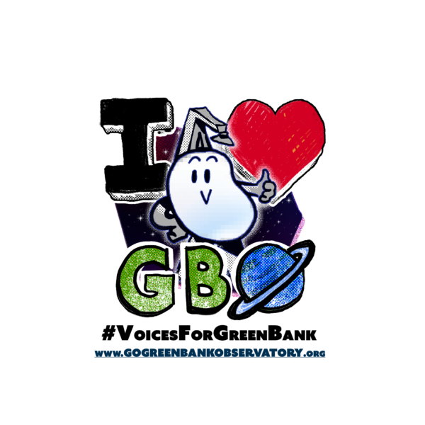

| Home |
| Take Action |
| Resources |
| Media Gallery |
| Contact Us |

Social Media Guide#VoicesforGreenBankShare your voice and story with Congress! And then join our social media campaign to share your story and encourage others to call Congress too! Keep reading below the graphic for how you can help! Thank you for sharing your voice to support the GBO to remain funded for continued operation as a science and education focused facility!We are so glad you have visited this page! Our goal is to spread the word about the current proposal to cut funding and recommended decommissioning and dispositioning of the GBO in order to encourage supporters of the Observatory to share their stories with key members of Congress (this includes your own Congress members as well as those listed on this page: https://www.gogreenbankobservatory.org/congressional-contact-info/) and urge them to support full funding of the GBO and keep it focused on science and education.Social media is a great (and fun!) way to get the word out! In addition to contacting Congress – You can make a difference by sharing your story on social media and encouraging others to contact Congress too! Please also consider emphasizing this message in your posts: “Keep the Green Bank Observatory open to the public and fully funded for Open Skies science and education focused operation!" If you make a post, TikTok video, Instagram or Facebook reel and/or story, please use the hashtag: #VoicesForGreenBank, and tag us using our account name for each platform: TikTok: @voicesforgreenbank Facebook: @Voices For Green Bank Instagram: @voicesforgreenbank If the platform allows, please consider sharing a link to our website: https://www.gogreenbankobservatory.org/ in your posts and/or video descriptions as well. Also, if you would like to make a video but aren’t sure where to start, consider using some of the questions listed below for prompters. Some of the questions are connected with watching Small Town Universe, so be sure to watch the trailer and consider requesting a screening linked here: https://smalltownuniversefilm.com/. Why do you think the Green Bank Observatory is important to West Virginia? What opportunities has Green Bank provided or could provide for students like you in STEM? How has access to places like Green Bank influenced your learning or interest in science and technology? How would the closure or reduction of funding for Green Bank affect your future or the futures of other students in WV and other states? Do you think rural communities are often overlooked in scientific advancement? How does Green Bank challenge the narrative? What would you say to someone who doesn’t understand the importance of funding science institutions in rural America? How can students help raise awareness about the importance of the Green Bank Observatory? If you could write a letter to Congress about Green Bank, what would be your message? What part of Small Town Universe stood out to you the most and why? How did the film change or reinforce your understanding of Green Bank Observatory’s role in science and discovery? Thank you for your efforts to raise awareness about ensuring full funding for science and education operation of the Green Bank Observatory! |